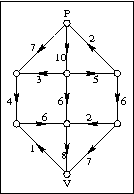

OEFENINGEN: Stroomnetwerk
2017-2018
week 7 - 8 november 2017
- Bekijk het volgende stroomnetwerk:
Los dit op, gebruik makend van breedte-eerst zoeken om een vergrotend pad te vinden. - Implementeer een stroomnetwerk. Je krijgt een aantal bouwstenen van ons. In stroomnet.h is een klasse van paden geïmplementeerd. Er zit ook een klasse Vergrotendpadzoeker in. Bovendien krijg je al de basiscode voor het zoeken van maximale stroomnetwerken in de klasse Stroomnetwerk. Vul deze code aan, en test ze uit met het testprogrammaatje stroomnet.cpp.
Bijkomende opgave
De efficiëntie van de methode hangt af van de efficiëntie van de Vergrotendpadzoeker. Implementeer zelf twee vergrotendpadzoekers:
- Een Kortstepadzoeker. Deze geeft een vergrotend pad terug dat zo kort mogelijk is.
- Een Grootstecapaciteitszoeker. Deze geeft een vergrotend pad
met maximale capaciteit.
Tip: als je voor een gegeven knoop c, M(c) de maximale capaciteit noemt van een pad van de producentknoop naar c dan kan je M zoeken voor alle mogelijke knopen (en dus ook voor de verbruiker) met een methode die zeer goed lijkt op het algoritme van Dijkstra.
- Welke zoeker heeft het kleinste aantal vergrotende paden nodig?
- Welke zoeker bezoekt in het totaal het kleinste aantal knopen?
Een toepassing:
GaladinerBeschouw volgend probleem: Bij een galadiner wil men afgevaardigden uit een aantal delegaties verdelen over de beschikbare tafels, zo dat elke delegatie verdeeld is over zoveel mogelijk tafels.
Er zijn D delegaties en T tafels.
Delegatie i bestaat uit Pi
personen. Tafel j heeft Zj
zitplaatsen. (het aantal personen per delegatie en het aantal
zitplaatsen per tafel kunnen dus verschillen) Er zijn genoeg
plaatsen voor alle afgevaardigden, maar er kunnen plaatsen op
overschot zijn.
Hoe kan je dit probleem beschrijven als een stroomnetwerkprobleem? Is er altijd een oplossing?
Ontwerp en implementeer een programma dat een oplossing zoekt voor dit probleem. Lees de nodige gegevens uit een eenvoudig tekstbestand in.